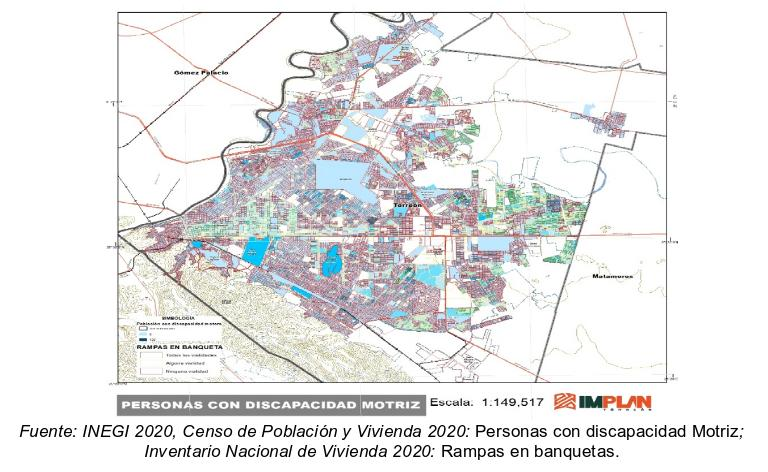

De acuerdo con el artículo 9 de la recientemente aprobada Ley General de Movilidad y Seguridad Vial (LGMSV), la movilidad es el derecho de las personas a trasladarse en condiciones de igualdad, contribuyendo al ejercicio y garantía de sus derechos humanos, por lo tanto, las personas y sus necesidades serán el centro de diseño y desarrollo de acciones en la materia. (Gobierno de México, 2022)
Una de las muchas estrategias para lograrlo es proveer a las ciudades de infraestructura vial que garantice el tránsito de todos los usuarios de las calles, incluyendo a personas en condiciones de vulnerabilidad (como niñas, niños y personas adultas mayores), personas con movilidad limitada (cuya movilidad se ha reducido por motivos de edad, embarazo o alguna otra situación que requiere una adaptación a sus necesidades particulares) y en situación de discapacidad que, desde el modelo de derechos humanos, se considera como el resultado de la interacción entre personas con limitaciones y las barreras del entorno que evitan su participación plena en igualdad de condiciones (CNDH, 2016).
Es por todo esto que, en el marco del Día del Peatón, se considera necesario sumar acciones para garantizar el tránsito seguro de las personas que diariamente caminan y usan las diversas infraestructuras urbanas para moverse, recibir servicios y ejercer derechos. Por lo tanto, es necesario intervenir en la infraestructura vial para lograr una movilidad inclusiva para todas y todos.
Los conceptos de accesibilidad y diseño universal, establecen la primicia de proyectar todos los espacios para que cualquier persona independientemente de sus circunstancias disfrute de ellos, primeramente es necesario recalcar que existen tres tipos de accesibilidad: la física que permite la manipulación de objetos y el desplazamiento en el espacio, la sensorial que permite la comprensión, comunicación e interacción y la cognitiva que permite comprender la información que proporciona el entorno.
Esto es alcanzable siempre y cuando se incluya señalización específica para peatones, mejorar la iluminación de las aceras, contemplar medidas mínimas de circulación para personas en silla de ruedas, banquetas en buenas condiciones que incluyan bandas podo táctiles que sirvan de guía o de alerta, semáforos sonoros para personas con limitaciones visuales, rampas con un máximo de pendiente adecuada. Una buena accesibilidad es aquella que pasa desapercibida a los usuarios, ya que implica un diseño intuitivo, cómodo, estético y seguro.
Si tomamos en cuenta estos criterios, no solo se benefician las personas con discapacidad, sino también las personas de mayor edad y aquellas que, por causa de lesión o situación, tienen limitada su movilidad de manera temporal.
En el caso de Torreón, el Censo de Población y Vivienda 2020 indica que habitan 256,307 personas con alguna discapacidad o limitación para realizar sus actividades, de las cuales el 58% son limitaciones motoras, el 25% visuales, el 8% son auditivas, 5% limitaciones intelectuales y 3% limitantes del habla. Así mismo en el Inventario Nacional de Viviendas 2020 (INV), se registró que el 77% de las manzanas de la ciudad no cuentan con una rampa para la población en silla de ruedas, esto significa que las personas en estas condiciones pueden ver comprometida su movilidad autónoma dentro del entorno urbano.
En nuestra ciudad contamos con el Reglamento de Movilidad Urbana y Seguridad Vial, algunos de los principios para su aplicación son I) La circulación en condiciones de seguridad vial como derecho, por lo tanto se deben adoptar medidas para la protección de los usuarios, y II) los ciudadanos deben dar prioridad de uso del espacio a los usuarios más vulnerables, en especial personas con alguna discapacidad y otros sectores de la población con necesidades especiales como niños, adultos mayores y mujeres embarazadas. Así mismo, el IMPLAN se encuentra elaborando el Plan de Movilidad Activa, que plantea estrategias que favorecen las condiciones de seguridad vial, accesibilidad e intermodalidad, entre ellas considera nuevos conceptos de calle en las que se facilita la accesibilidad para los modos de transporte no motorizados, espacios públicos que facilitan la intermodalidad y la accesibilidad, así como la estrategia de seguridad enfocada a que los usuarios más vulnerables puedan desplazarse con infraestructura más segura.

REFERENCIAS
Comisión Nacional de los Derechos Humanos (Ed.). (2016). La Convención sobre los Derechos de las Personas con Discapacidad y su Protocolo Facultativo (Número Segunda edición). Irene Vázquez del Mercado Espinosa.
Gobierno de México (2022). Ley General De Movilidad y Seguridad Vial
Instituto Nacional de Estadística, Geografía e Informática (INEGI). (2020). Censo de Población y Vivienda (2020) [Conjunto de datos]. https://www.inegi.org.mx/programas/ccpv/2020/
Instituto Nacional de Estadística Geografía e Informática (INEGI). (2020). Inventario Nacional de Viviendas (INV) (Versión 2020) [Conjunto de datos]. https://www.inegi.org.mx/rnm/index.php/catalog/80#:~:text=El%20Inventario%20Nacional%20de%20Viviendas%20(INV)%20integra%20informaci%C3%B3n%20estad%C3%ADstica%20con,vivienda%2C%20poblaci%C3%B3n%20y%20entorno%20urbano
Corporación Ciudad Accesible & Boudeguer & Squella ARQ. (2010). Manual de Accesibilidad Universal. Gobierno de Chile.
ONU HÁBITAT. (2019, 3 diciembre). Ciudades incluyentes para personas con discapacidad. ONU HABITAT Por un mejor futuro urbano. Recuperado 11 de agosto de 2022, de https://onuhabitat.org.mx/index.php/ciudades-incluyentes-para-personas-con-discapacidad